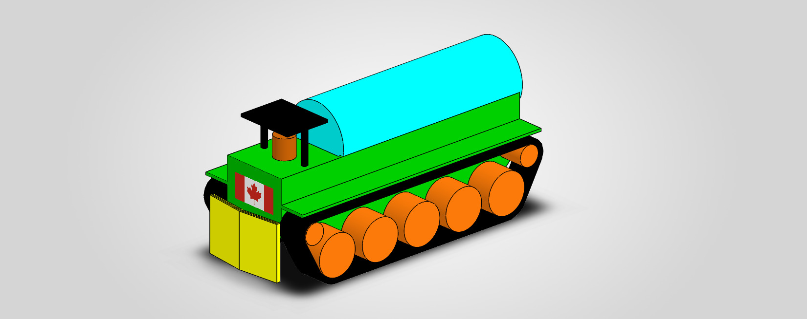
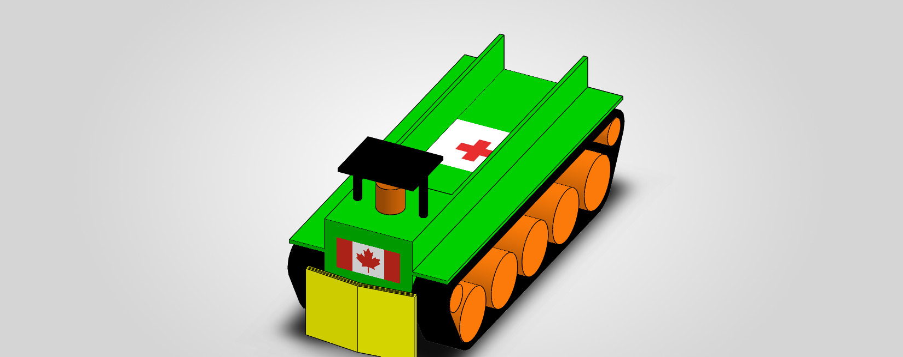
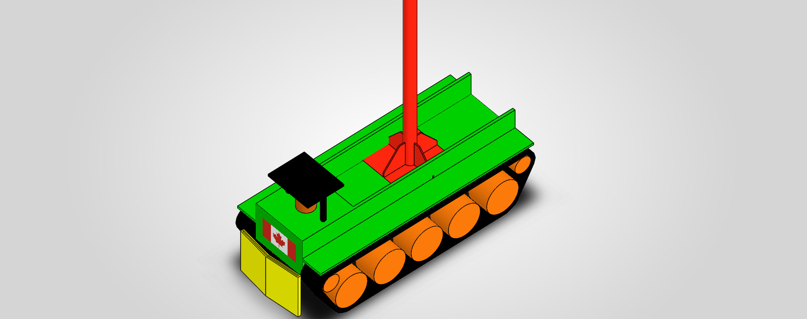
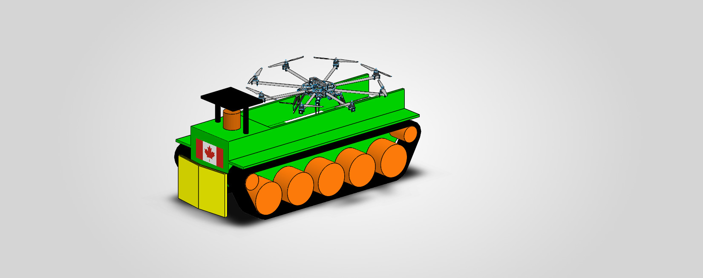

Autonomous Mobility for Remote Communities
Engineering Independence for the North
Modular. Rugged. Community‑Driven Technology for Real‑World Challenges.
The Universal Community Support Tractor is designed to strengthen resilience in remote, underserved, and Indigenous communities by providing practical, modular tools for fire response, rescue, communications, and UAV operations.
Our mission is to deliver affordable, rugged, and community‑maintainable technology that supports safety, mobility, and local autonomy — especially in regions facing infrastructure gaps, climate‑driven emergencies, and limited access to specialized equipment.
Many communities across Canada — including Indigenous Nations, northern settlements, rural regions, and other equity‑seeking groups — face barriers to emergency response, transportation, and communications infrastructure.
The Community Support Tractor directly addresses these challenges by offering:
The goal is not to replace existing systems, but to empower communities with practical tools that increase safety, autonomy, and resilience.
The Universal Community Support Tractor is built around a rugged, modular platform designed for real-world community operations:
Operator / Command Post
│
▼
Remote Control Interface
│
▼
Onboard SBC (Raspberry Pi / Jetson Nano)
│
├── Motor Controller
├── LiDAR Module
├── GPS + IMU
├── Environmental Sensors
└── Telemetry Uplink
│
▼
Tractor Platform
│
▼
Optional UAV Module

Designed for wildfire response, perimeter control, and community fire safety.

Supports emergency access, patient transport, and remote rescue operations.

Provides temporary connectivity, mesh networking, and emergency communications.

Combines ground mobility with aerial overwatch for search, mapping, and monitoring.
The Community Support Tractor project is developed by Alex Likhterman, an independent mechanical and embedded systems engineer with over 40 years of experience in mechanical design, embedded systems, UAV/VTOL, robotics, and CNC machinery.
Alex Likhterman
Email: telecom55@gmail.com